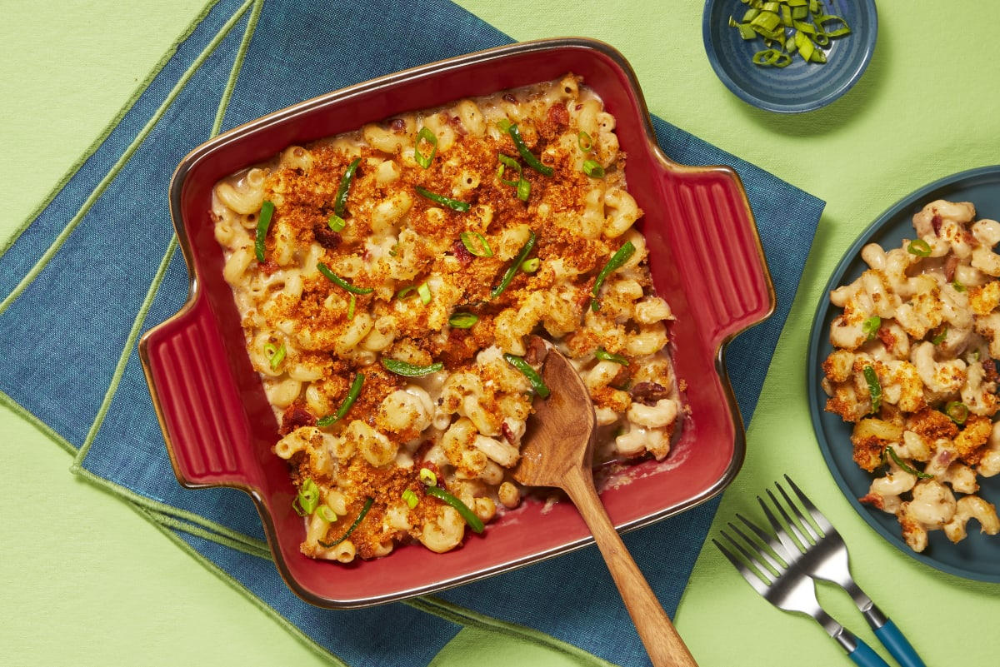

Bacon Jalapeno Macaroni and Cheese

Description
My very own bacon jalapeno macaroni and cheese recipe. I usually cook this for friends and family at large occassions
such as thanksgiving (or friendsgiving) dinner, potlucks, and any event where I want to impress people with my cooking
skills.
Ingredients
- 16 oz cellentani pasta
- 2 cups half n half
- 4 tbsp butter
- 2 tbsp flour
- 2 cups grated cheddar cheese
- 4 oz jalapenos
- 1 cup panko breadcrumbs
- 1/4 cup grated parmesan
- salt and black pepper to taste
Directions
- Heat the oven to 350 F and boil the pasta until it is al dente. Keep the half n half out of the fridge so it can
unchill.
- In a sauce pan over low-medium heat, melt 3 tbsp butter and whisk in flour, in small increments, to make a roux.
The roux should be a light brown color and smell like popcorn when ready.
- Take the roux off the heat and whisk in the half n half to make a bechamel sauce. Whisk until it reaches a smooth
and creamy consistency. Season the bechamel sauce with salt and pepper to taste.
- Whisk in the grated cheese, in 1/2 cup increments.
- Pour the cooked pasta into a baking tray and mix in your jalapenos. Then pour the cheese sauce into the baking
tray.
- In a small pan, over medium heat, melt the remaining butter. Toast the panko breadcrumbs and the grated
parmesan until golden brown. Season with black pepper.
- Pour the breadcrumbs evenly over the top of the baking tray. Bake in the oven for 30 min.